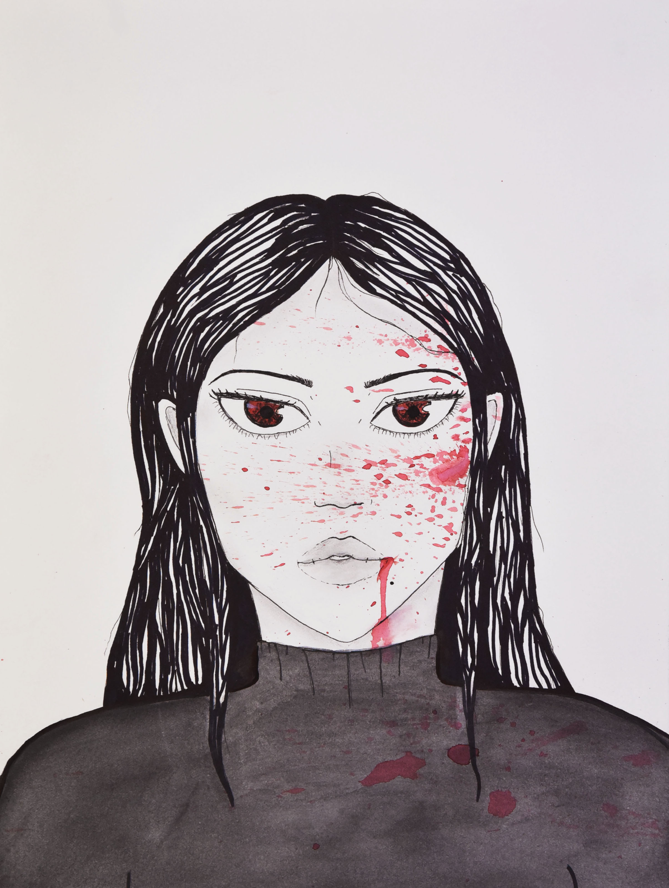
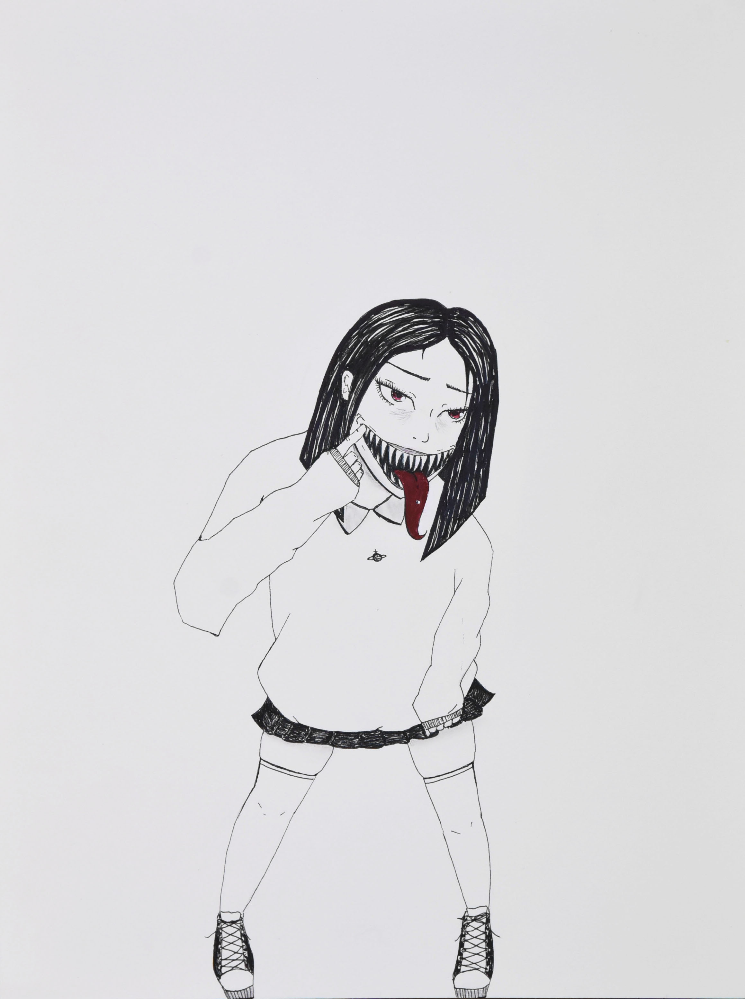
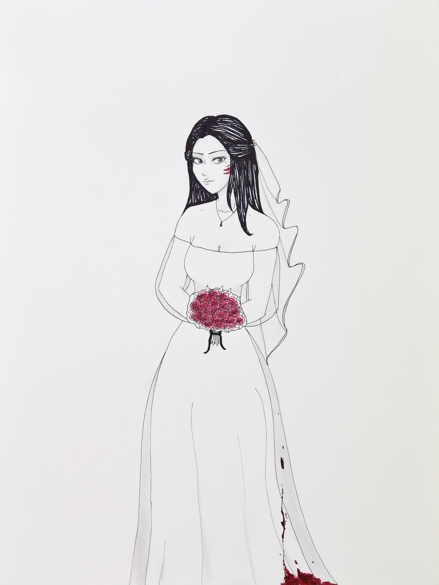
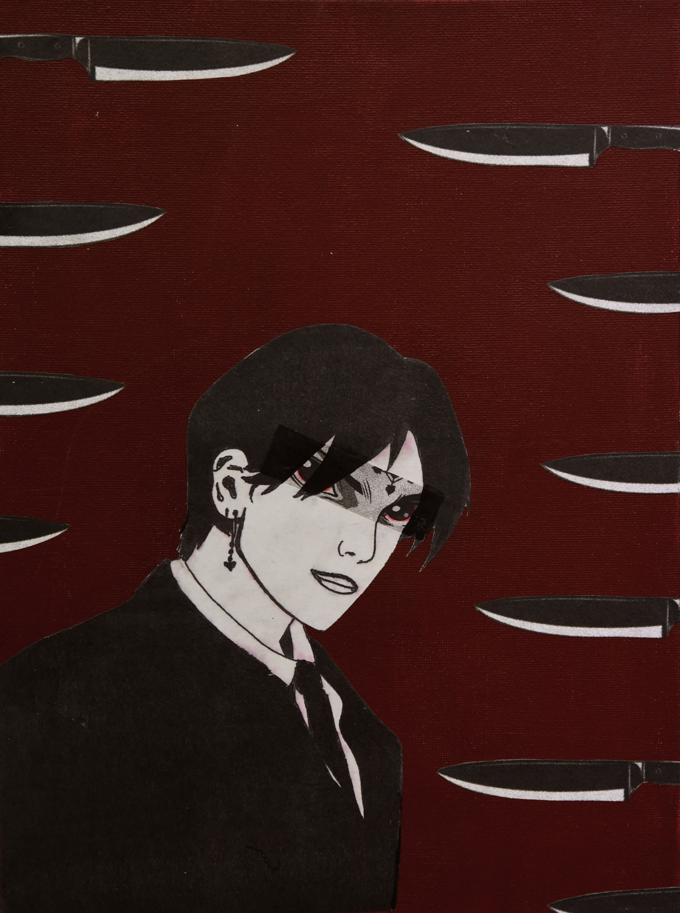
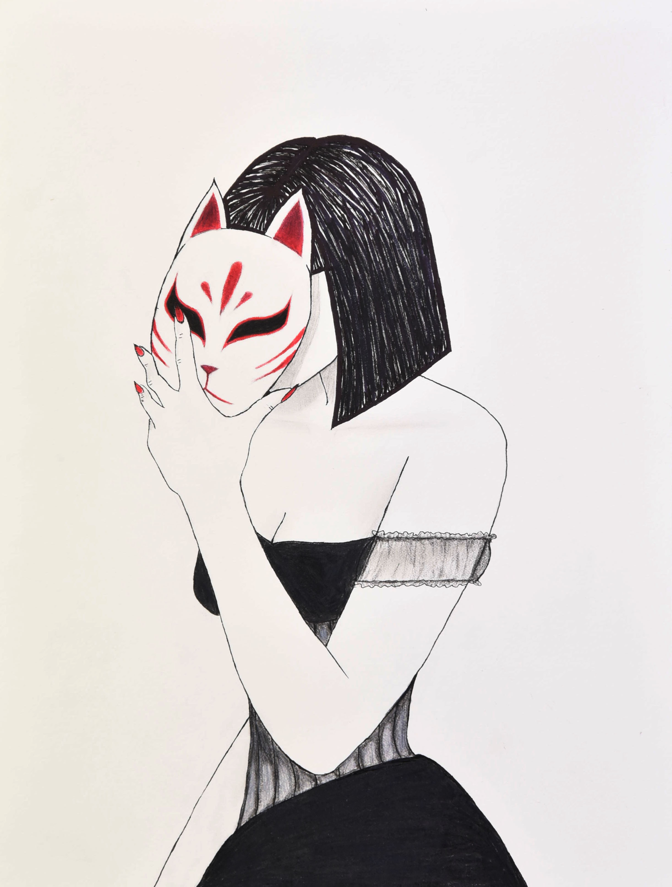
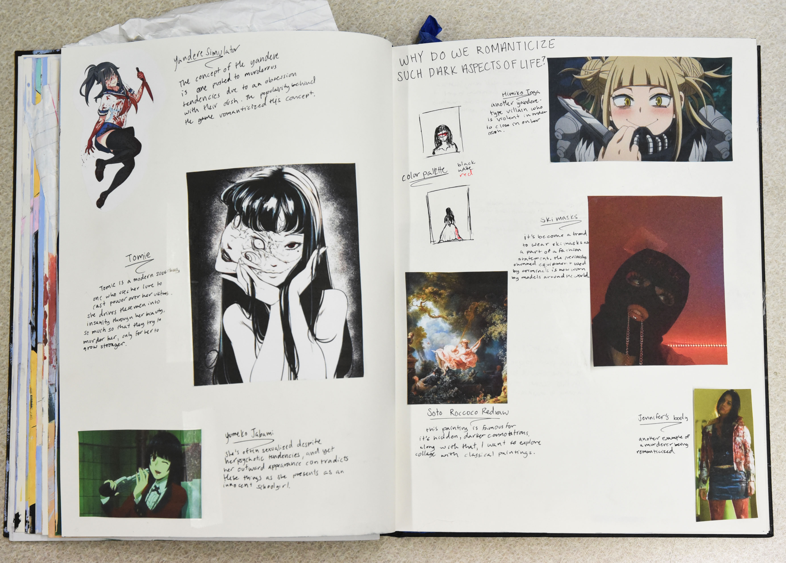

Corruption of Beauty
Ainsley Millard

Mugshot
9"x12"; Micron pens, graphite, watercolor; 2020

Pearly Whites
9"x12"; Micron pens, pencil, acrylic paint; 2020

The Blushing Bride
9"x12"; Micron pens, pencil, acrylic paint; 2020

Lucifer
8"x10"; Collage, acrylic paint, micron pens; 2020

Kitsune
9"x12"; Micron pens, pencil, colored pencil; 2021

Siren
9"x12"; Micron pens, pencil, colored pencil; 2021

moodboard 1
18"x24"; Collage, paper, ink; 2020
Even the most innocent of us have a darker side, the question is whether or not we choose to let
it show. In horror comics, the author is forced to rely on visuals alone rather than sound or
videography in order to startle their readers. For this investigation, I use my graphic drawing
style to illustrate themes of childhood and adolescence to depict a "sweet but psycho"
narrative. By utilizing a style similar to Japanese horror manga, but incorporating contemporary
style and themes regarding women, I’m able to ask myself this: “why are women forced to cloak
their true selves in a facade of beauty and grace?”. This question has been on my mind for years
as I began to notice women, including myself, refusing to embrace their true emotions or
appearances in order to seem “normal” to their peers. This goes along with the rise in
romanticisation of stigmatised aspects of life such as mental illness, crime, and overall
recklessness. I wanted to depict a series of people, primarily women, who are doing the exact
opposite: bearing their subhuman side to the world in an exaggerated fashion. The use of body
horror, blood, and monstrous qualities is in stark contrast with the naive, average looking
subjects of each drawing. The medium of micron and acrylic paint allowed me to create
minimalistic works, so that I can focus on the detail of the subject alone. These characters,
through exposure, have become their own entities, almost extraterrestrial. I don’t want them to
be dissolved into a background.
Corruption of Beauty
Ainsley Millard
Mugshot
9"x12"; Micron pens, graphite, watercolor; 2020
Pearly Whites
9"x12"; Micron pens, pencil, acrylic paint; 2020
The Blushing Bride
9"x12"; Micron pens, pencil, acrylic paint; 2020
Lucifer
8"x10"; Collage, acrylic paint, micron pens; 2020
Kitsune
9"x12"; Micron pens, pencil, colored pencil; 2021
Siren
9"x12"; Micron pens, pencil, colored pencil; 2021
moodboard 1
18"x24"; Collage, paper, ink; 2020
o